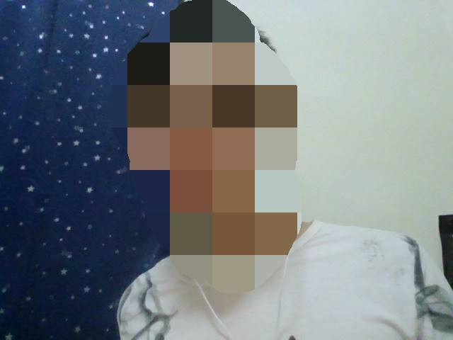
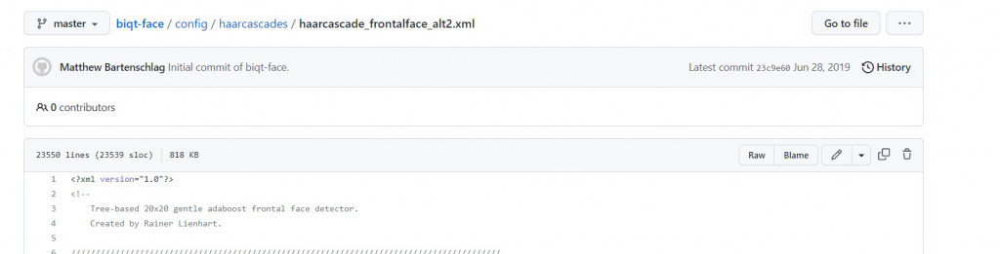
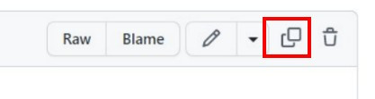
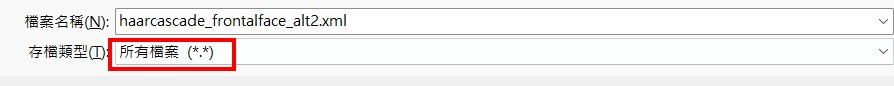

【day12】預訓練模型訓練 & 應用- 使用OpenCV製作人臉辨識點名系統 (上)
發布日期: 2022-09-16 01:38:53
原文連結: https://ithelp.ithome.com.tw/articles/10291158
到這邊我相信你已經有機器學習與深度學習的概念了，所以接下來的課程中我會開始來教一些預訓練模型的用法，而這次要做的就是使用OPENCV辨識人臉並成功點名，而我們今天要做的事情就是辨識臉部並創建自己的資料集。
辨識臉部
今天的目錄如下
- 1.開啟電腦鏡頭並顯示
- 2.下載xml與辨識臉部
- 3.減少電腦資源與可視化
開啟電腦鏡頭並顯示
在開始辨識人臉之前我們需要打開電腦鏡頭，這裡可以使用opencv當中VideoCaptured()開啟鏡頭，但在windows當中卻有一些BUG存在，就是無法每次都成功的開啟，所以我們可以寫一個while迴圈，判斷鏡頭是否開啟，來解決這個問題。
#開啟鏡頭
cap = cv2.VideoCapture(0)
#確保鏡頭完整的開啟
while(not cap.isOpened()):
cap = cv2.VideoCapture(0)
開啟鏡頭後，就能開始讀取資料了，透過cap.read()能讀取目前鏡頭的照片。
#是否有圖片type:bool,圖片本身
ret, frame = cap.read()
但在市面上的人臉辨識系統，都是以影片的樣式來表達，所以我們需要利用肉眼視覺暫留(Persistence of vision)的方式將圖片轉成影片，所以我們要將cap.read()這個function放入到while()當中進行迴圈，最後通過imshow將結果顯示出來，並且能夠使用imwrite來儲存圖片()
cnt = 0
while(True):
ret, frame = cap.read()
gray = cv2.cvtColor(frame, cv2.COLOR_BGR2GRAY)
cv2.imshow('live', frame)
cv2.imwrite(f'face/my_face_{cnt}.jpg',frame)
這樣我們就可以取得很多的人臉圖片

但我們觀察這張圖片就會發現，照片中含有太多的不是人臉的資料，這樣在訓練時可能就會使準確率下降，甚至是underfitting，所以這時就需要使用opencv的臉部辨識器，來找到我們的人臉。
下載xml與辨識臉部
首先我們前往opencv的github找到"haarcascade_frontalface_alt2.xml"點我前往

之後點擊紅框處複製文字

最後貼上記事本上並將檔案名稱命名為"haarcascade_frontalface_alt2.xml"，這樣我們就有臉部辨識的設定檔了

我們剛剛下載的是程式設定檔，所以還需加入模型本身，在這邊只需要使用CascadeClassifier()就能建立一個臉部辨識器了。
classfier = cv2.CascadeClassifier(cv2.data.haarcascades +"haarcascade_frontalface_alt2.xml")
減少電腦資源與可視化
有了辨識器後我們需要去設定他的參數我們先看個範例
faceRects = classfier.detectMultiScale(gray, scaleFactor = 1.2, minNeighbors = 3, minSize = (32, 32))
首先說明一下這些參數的意思
ScaleFactor：每次搜尋方塊減少的比例
minNeighbors:矩形個數
minSize:檢測對象最小值
這樣是不是還是看不懂?因為opencv中是使用一種叫做蒙地卡羅方法(Monte Carlo method)的方式，這種方法的中心技術就是猜與賭，這種做法就像是捕魚一樣，我們先灑網出去猜這個區域究竟有沒有魚，若是有魚我們就開始縮小魚網的範圍，最後把魚抓上來。
我們來看看在opencv中會使用哪些做法，首先使用較大範圍的方格去辨識臉部，在opencv中是使minNeighbors這個參數是來辨別相鄰方格的關聯性，關聯性大於等於這個值時電腦才認為區域內有臉部。若區域內有臉部會透過ScaleFactor數值減少範圍大小，直到指定的最小範圍時minSize時縮小才會停止，而使用這種技術可使減少消耗電腦的資源，畢竟圖像資源是非常吃效能的。
了解後我們會知道，圖片會有機會找不到人臉，這時程式正在擴大範圍在偵測，此時會消耗非常多的效能，若是在繼續執行動作可能會導致程式出現意外狀況，所以我們需要設定成當有人臉時才繼續接續的動作。
if faceRects:
當條件達成後代表faceRects裡面含有4個數值分別是x軸座標、y軸座標、寬、長，但可能不只讀到一張人臉，所以需要將程式寫在一個for迴圈中找到所有的人臉數值
for (x, y, w, h) in faceRects:
有了這些數值後我們能通過縮小圖片的範圍，並且畫出一個方形包住我們的人臉，代表程式有偵測到
face = frame[y - 10: y + h + 10, x - 10: x + w + 10]
#圖片,座標,長寬,線條顏色,粗度
cv2.rectangle(frame, (x - 10, y - 10), (x + w + 10, y + h + 10), (0,255,0), 2)
為了增加辨識臉部的準確率先將資料轉換成灰階，這可以使小區域的亮度降低防止單一像素過亮的問題，這種做法並不會改變圖片整體的亮度。
gray = cv2.cvtColor(frame, cv2.COLOR_BGR2GRAY)
我們的程式是寫在一個while迴圈中，所以我們要設定一個跳脫條件，我們可以設定成按Q件離開，並且在離開後需要將視窗與鏡頭都一起關閉。
#按Q跳脫迴圈
if cv2.waitKey(1) == ord('q'):
break
#釋放鏡頭
cap.release()
#關閉視窗
cv2.destroyAllWindows()
最後將程式碼組合在一起就完成取得人臉的方式了
完整程式碼
import cv2
cap = cv2.VideoCapture(0)
while(not cap.isOpened()):
cap = cv2.VideoCapture(0)
cnt = 0
classfier = cv2.CascadeClassifier(cv2.data.haarcascades +"haarcascade_frontalface_alt2.xml")
while(True):
ret, frame = cap.read()
gray = cv2.cvtColor(frame, cv2.COLOR_BGR2GRAY)
faceRects = classfier.detectMultiScale(gray, scaleFactor = 1.2, minNeighbors = 3, minSize = (32, 32))
if len(faceRects) > 0:
for (x, y, w, h) in faceRects:
face = frame[y - 10: y + h + 10, x - 10: x + w + 10]
c
cnt+=1
cv2.imwrite(f'face/my_face_{cnt}.jpg',face)
if cv2.waitKey(1) == ord('q'):
break
cv2.imshow('live', frame)
cap.release()
cv2.destroyAllWindows()
今天的難度是不是變成比較低了呢?因為今天只是在玩一些opencv的套件，明天的難度會開始提升，因為會來玩一下預訓練模型VGG-16